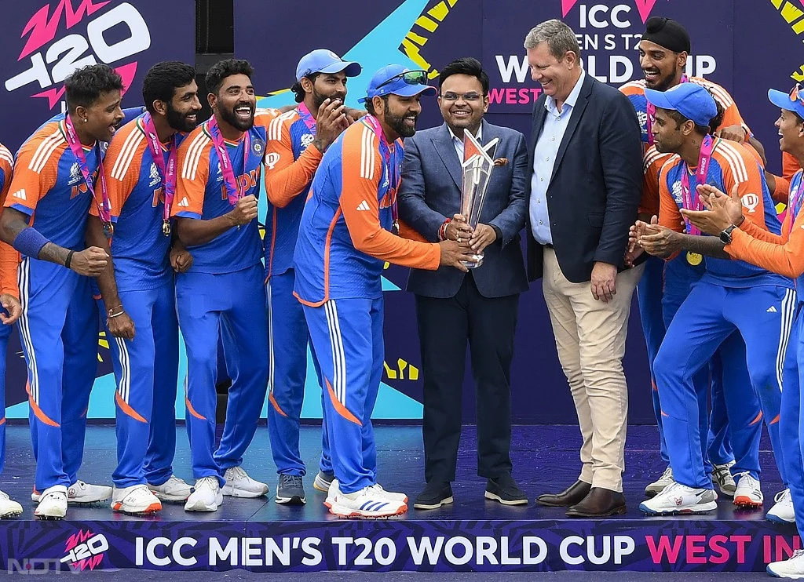

Most loved sport in India
From historic wins to legendary players - Explore the Journey
About Cricket: Cricket is not just a game in India, it's an emotion . Played between two teams of 11 players, it has given us countless memories.
The Unbeaten Champions! Indian Cricket Team lifting the ICC T20 World Cup 2024 trophy in Barbados after defeating South Africa in a thrilling final. This image shows the pure emotion, unity and pride of Men in Blue.

After 17 long years since 2007, India won the T20 World Cup again under the captaincy of Rohit Sharma. The team remained unbeaten throughout the tournament, showing the dominance of Indian cricket. Virat Kohli's final knock and Jasprit Bumrah's deadly bowling made this victory unforgettable.
Indian Women's Cricket Team created history by winning the ICC Women's Cricket World Cup 2025 held in India. This golden moment shows Team India celebrating with the trophy amidst fireworks, confetti and 1.4 billion dreams.
For years, women's cricket was in the shadow, but this victory proved that Women in Blue are no less than Men in Blue. From Harmanpreet Kaur's leadership to Smriti Mandhana's elegant batting, every player fought like a champion.

Caption for Website: "Golden Girls of India - World Champions 2025! The moment when the whole nation cried with joy."
Cricket is a bat-and-ball game played between two teams of 11 players. Played on a 22-yard pitch, the objective is to score more runs than the opposition. It is the 2nd most watched sport in the world and is like a religion in India.
Played for 5 days. Real test of patience and technique. White jersey.
Each team plays 50 overs. World Cup is played in this format.
Fastest & most entertaining format. IPL is T20 format.
| Team | Score | Overs | Result |
|---|---|---|---|
| India | 210 / 4 | 20 | Won by 15 runs |
| Australia | 195 / 8 | 20 | - |
| CSK | 178 / 5 | 19.2 | Won by 5 wickets |
| MI | 175 / 9 | 20 | - |
King Kohli | 80+ Centuries
Captain Cool | Best Finisher
God of Cricket | 100 Centuries
Hitman | 3 Double Centuries in ODI